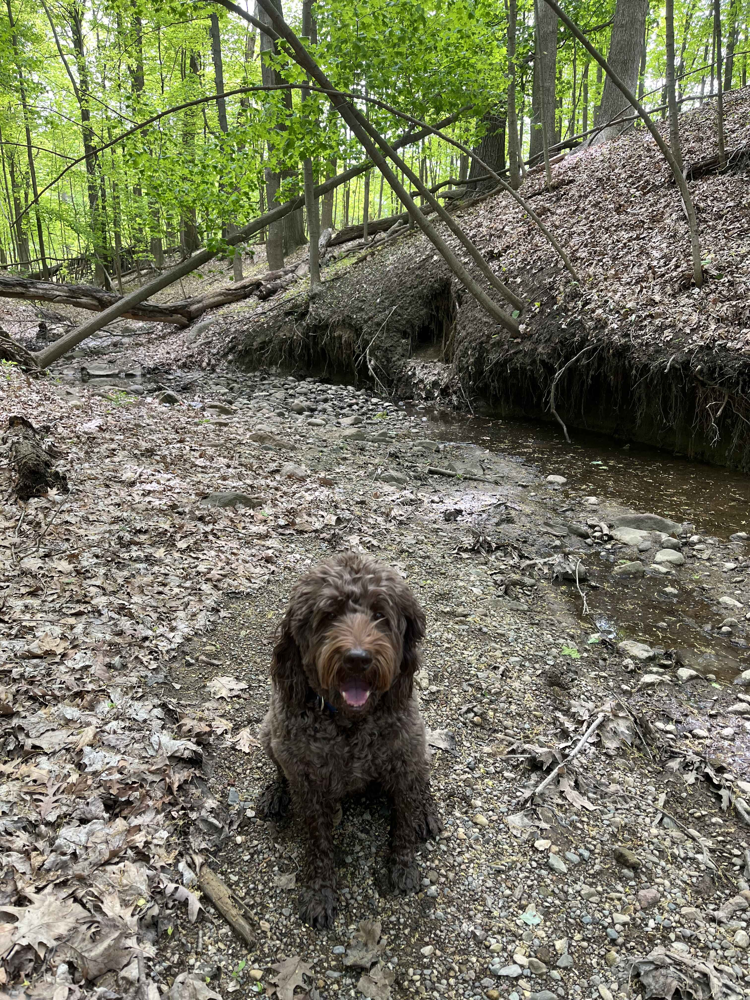
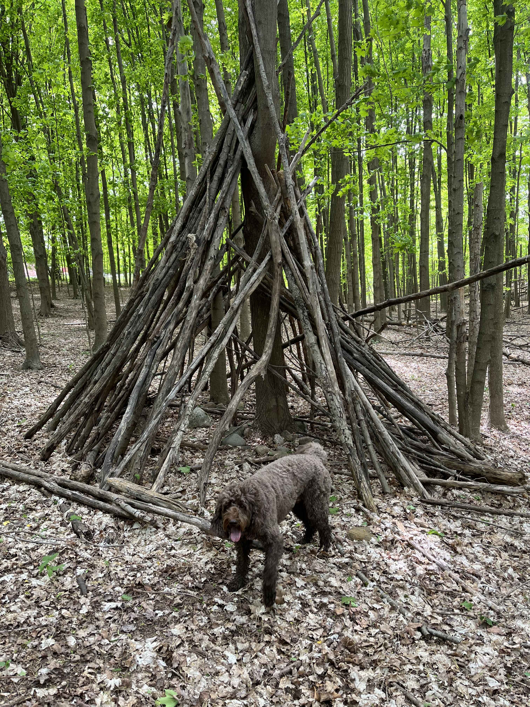
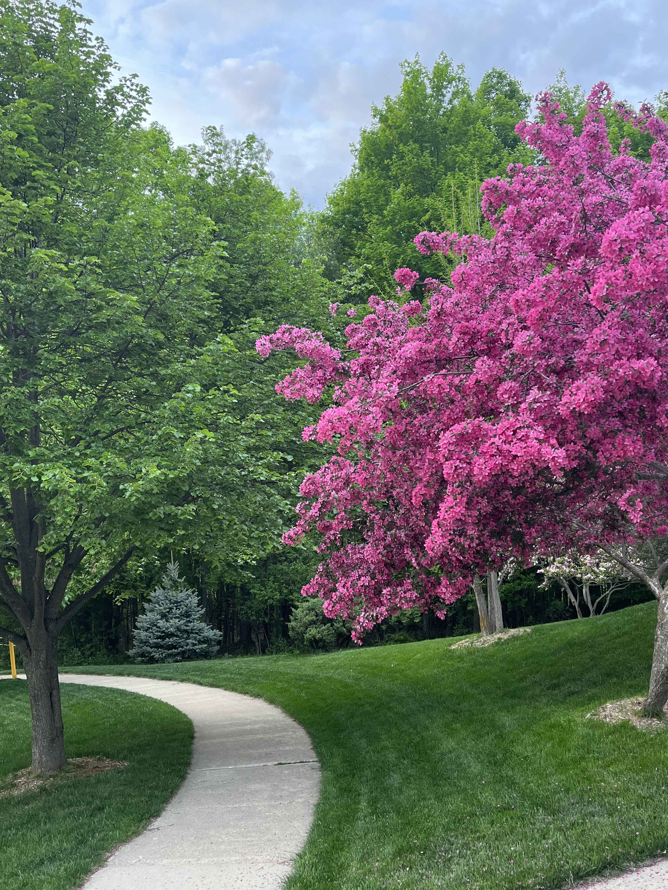
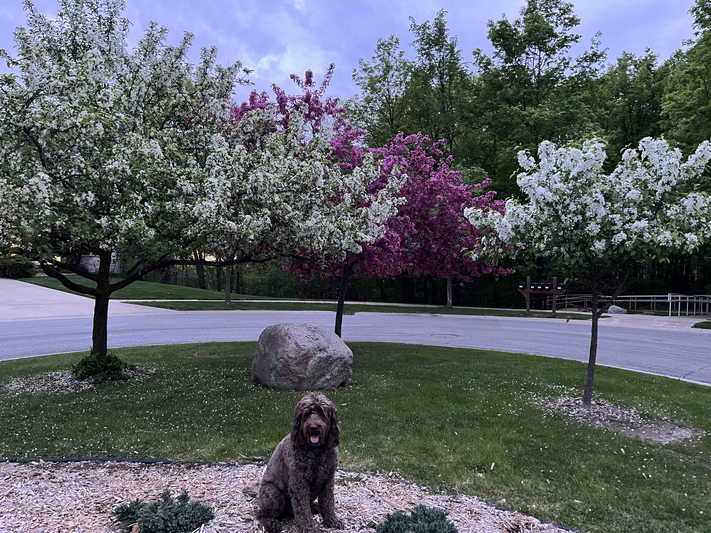
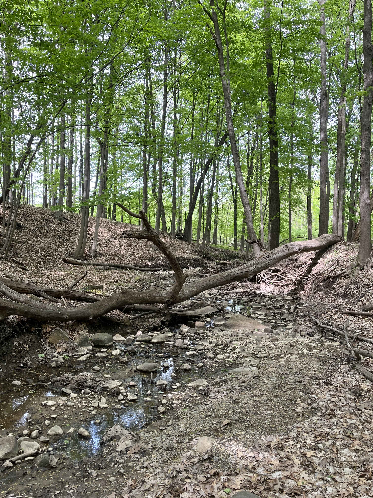
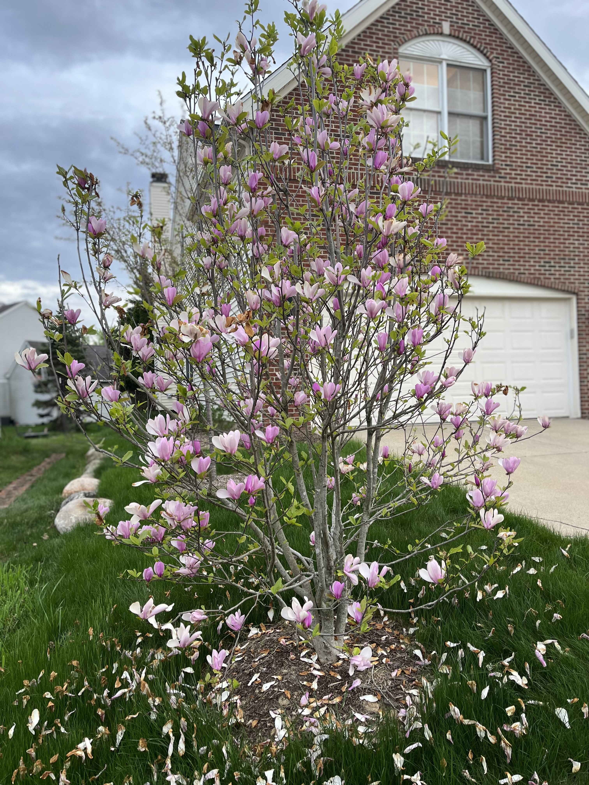

Springtime in Ann Arbor is a beautiful time. Even though it can be chilly at times, it is nice to walk my dog Bacon. This site includes some pictures I have taken on these walks.
Sometimes we walk around the neighborhood, other times we make it to the woods. Ann Arbor also has some beautiful lakes and rivers including the Huron River Watertrail and the Argo Park Cascades.





